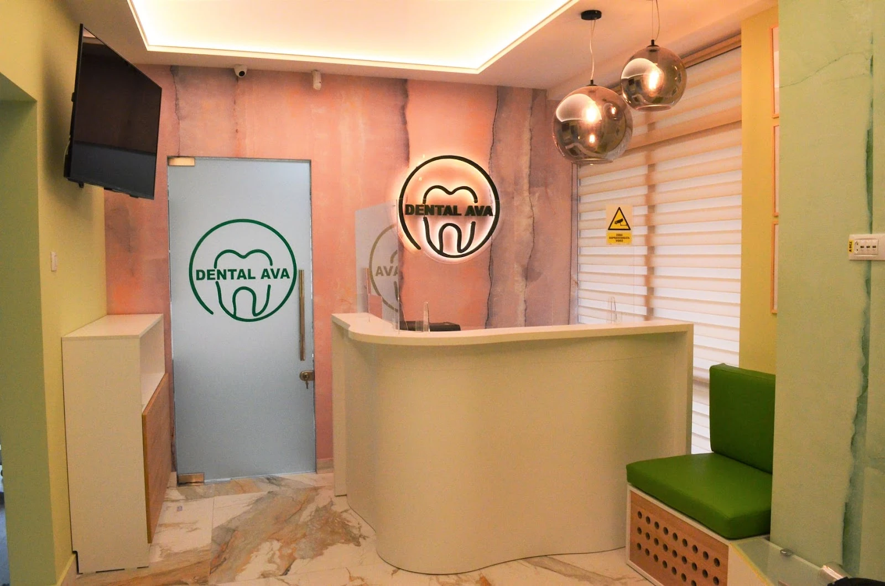
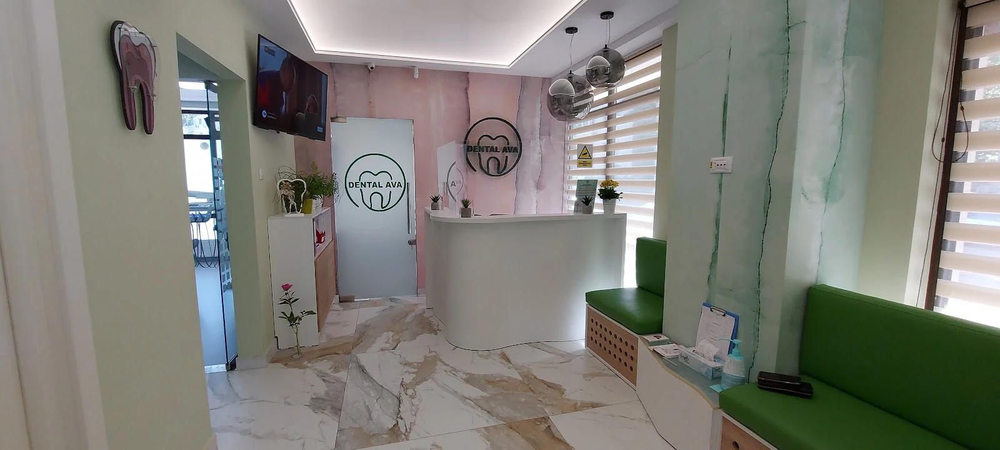
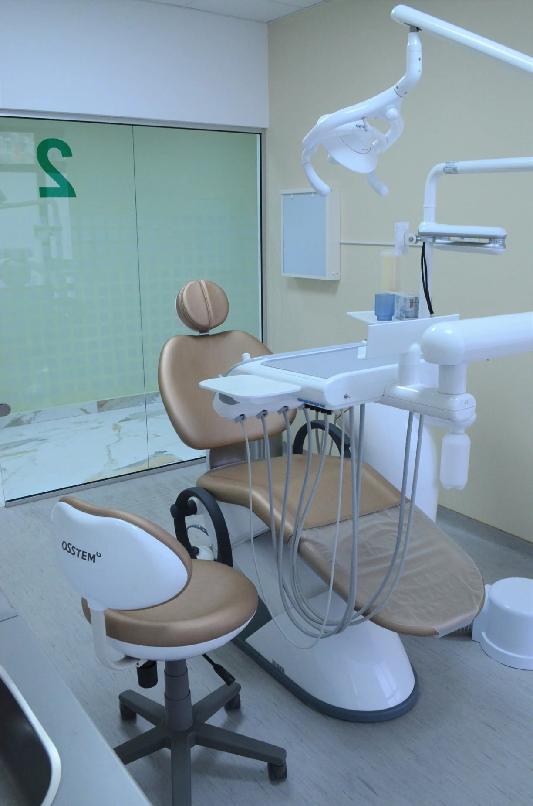
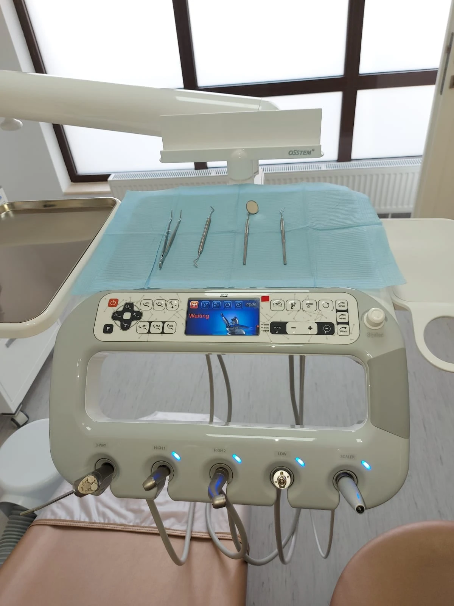
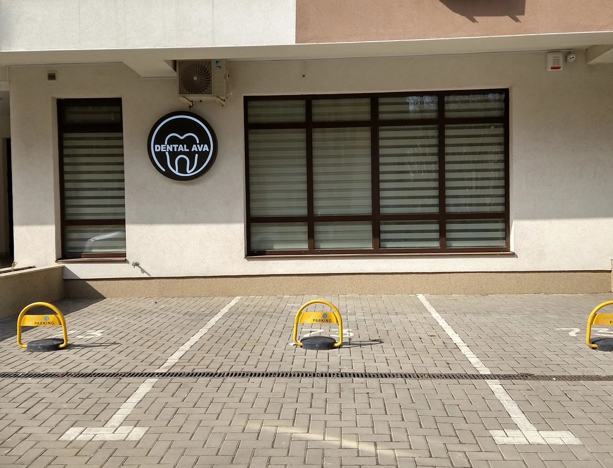

{{Zâmbetul tău,|Your smile,|O seu sorriso,}}{{cu răbdare și căldură.|with patience and warmth.|com paciência e carinho.}}
{{Dental Ava, pe Strada Clopotari 28, în Iași. Spune-ne motivul vizitei și când îți convine, iar cererea pleacă direct pe WhatsApp sau SMS.|Dental Ava, on Strada Clopotari 28, in Iași. Tell us why you would like to come and when suits you, and the request goes straight out on WhatsApp or SMS.|A Dental Ava, na Strada Clopotari 28, em Iași. Diga-nos o motivo da visita e quando lhe convém, e o pedido segue diretamente por WhatsApp ou SMS.}}

{{Intri într-un loc cu verde, roz pal și multă lumină.|You walk into green, pale pink and plenty of light.|Entra num espaço com verde, rosa-pálido e muita luz.}}
{{Un birou rotund, bănci verzi, un perete cu aspect de piatră și sigla Dental Ava pe sticlă. Firma de la intrare e luminată, așa că o găsești ușor.|A round desk, green benches, a stone-look wall and the Dental Ava logo on the glass. The sign at the entrance is lit, so it is easy to spot.|Um balcão redondo, bancos verdes, uma parede com aspeto de pedra e o logótipo da Dental Ava no vidro. O letreiro à entrada é iluminado, por isso é fácil de encontrar.}}

{{Fereastră mare, scaun la locul lui, instrumentele la îndemână.|A big window, the chair in place, instruments within reach.|Janela grande, cadeira no seu lugar, instrumentos à mão.}}
{{În cabinet se vede un scaun stomatologic modern, lampa de lucru și unitul cu instrumentele așezate pe tăviță, la lumină naturală.|The surgery has a modern dental chair, the operating light and the unit with instruments laid out on a tray, in natural light.|No consultório vê-se uma cadeira dentária moderna, o foco de trabalho e a unidade com os instrumentos dispostos num tabuleiro, com luz natural.}}



{{Caută firma rotundă de pe Strada Clopotari.|Look for the round sign on Strada Clopotari.|Procure o letreiro redondo na Strada Clopotari.}}
- Strada Clopotari 28, bloc C1700676 Iași, România
- 0743 936 512{{Sună în timpul programului|Call during opening hours|Ligue durante o horário}}
- {{Duminică: închis|Sunday: closed|Domingo: fechado}}{{Luni: de la 09:00 · restul programului: de confirmat|Monday: from 9:00 · other days: to be confirmed|Segunda: a partir das 09:00 · restantes dias: a confirmar}}